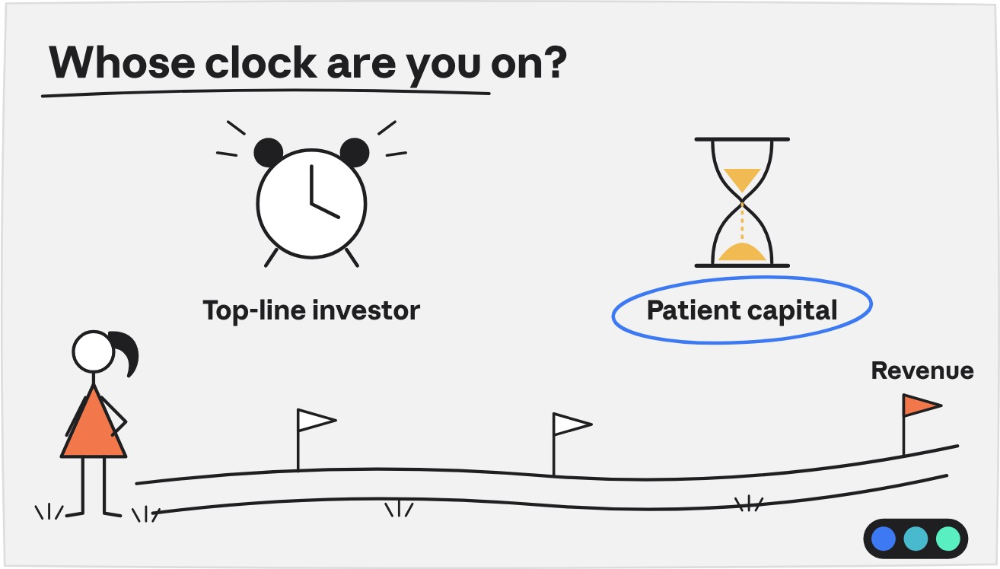
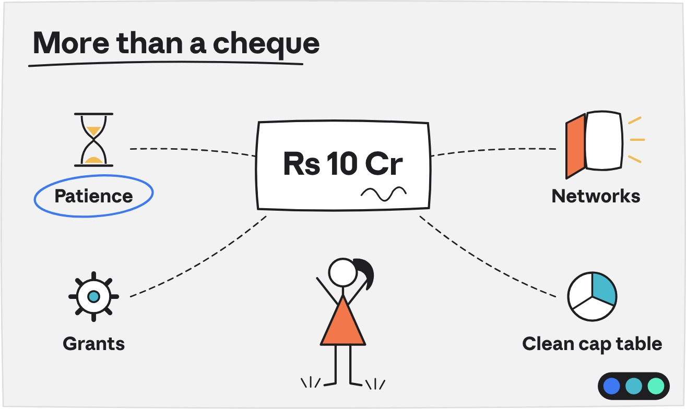

Prologue Blog · Founder Insights
The Right Money: Why Who Invests Matters as Much as How Much

Every founder remembers their first serious "yes" from an investor.
The relief. The call home. The urge to sign before anyone changes their mind.
I get it. But here's what nobody tells you in that moment: you are not just taking money. You are choosing a co-author for the next ten years of your company's story.
Your investor will sit on your board, vote on big decisions and have a say in how, and when, you exit. Choose well, and they make the story better. Choose badly, and they can rewrite the ending.
At Earlyseed Ventures, we sit on both sides of the table every week. The pattern is clear: startups rarely struggle because they raised too little. They struggle because they raised from the wrong people.
Every investor runs on a clock
Here's a secret about investors: each one is quietly watching a clock. Some clocks tick in quarters. Some tick in decades.
Take a deep tech company: drones, semiconductors, new materials, a novel drug. Years one to three go into R&D, prototypes and approvals. Revenue? Maybe year four. Maybe year seven.
That's not a flaw. That's deep tech.
What it needs is patient capital: investors who cheer for patents, certifications and successful trials, not just sales. Pair that company with an investor who checks revenue every quarter, and you have added a second fight to an already hard one.
Flip it around and the same holds. A fast-growing D2C or SaaS brand doesn't need a patient, decade-long thinker. It needs someone who gets speed, distribution and the next cheque.
So don't ask, "Who will give me money?"
Ask, "Whose clock matches mine?"
Who to call: a ready reckoner by sector
Think of this as a ready reckoner, not a rulebook. Every company is different, but these patterns show up again and again in the deals we see.
Deep tech, defence and space
- Call: grants (BIRAC, iDEX, TDB) and tech-savvy angels early; deep tech funds and strategics later
- Cheque: Rs 50 L to 5 Cr early, Rs 15 to 100 Cr later
- Avoid: anyone asking for revenue in month 18
Clean energy and climate
- Call: climate funds, impact investors, energy strategics, DFIs
- Cheque: Rs 5 to 50 Cr
- Avoid: pure equity for projects that really need debt
Pharma, medtech and healthtech
- Call: doctors' networks, healthcare angels, life-science funds, pharma strategics
- Cheque: Rs 2 to 30 Cr
- Avoid: investors who have never waited out a regulatory approval
Fintech
- Call: fintech VCs, bank and NBFC strategics, angels who know the RBI
- Cheque: Rs 3 to 75 Cr
- Avoid: anyone surprised by licensing timelines
D2C and consumer
- Call: consumer VCs, FMCG and retail family offices, operator angels
- Cheque: Rs 1 to 25 Cr
- Avoid: aggressive buyback and exit clauses
SaaS and B2B tech
- Call: SaaS VCs, operator angels, global funds at later stages
- Cheque: Rs 2 to 75 Cr
- Avoid: a valuation so high the next round becomes a down round
Manufacturing and profitable SMEs
- Call: family offices, PE funds, SME IPO investors, structured debt
- Cheque: Rs 10 to 100 Cr
- Avoid: "assured returns" dressed up as equity
Spot the pattern? The longer your road to revenue, the more you should lean on grants, strategics and specialists before generalists.
And family offices? They can be brilliant partners. Just read their term sheets slowly. Here's why.
Case study 1: The Rs 12 crore offer with strings attached
All names and details in these case studies are fictitious. The situations are very real.
NourishLab, a Pune consumer health brand, walked into our office glowing. A well-known family office had offered Rs 12 Cr, at a valuation well above anything else on the table.
They were ready to sign. Then we read the term sheet.
Three lines jumped out:
- Exit in 3 years, at a minimum of 3x the entry price.
- No exit? Forced sale. The investor could bring in a buyer of its choice and make the founders sell the whole company.
- Plan C: personal buyback. The founders would buy back the shares themselves, at 20% a year.
Translation: heads, the investor wins. Tails, the founders lose their company, or personally owe over Rs 20 Cr.
The twist? The family office wasn't being a villain. This was simply the template they used for their real estate deals. So we sat everyone down and talked it through.
The final terms: a five-year exit window, a forced sale only after year seven and above a minimum price, and no personal buyback at all. The valuation dipped slightly. The founders kept their company.
The lesson: a high valuation with one-sided terms is often worth less than a fair valuation with fair terms.
Case study 2: The drone company told to sell too soon
AeroVayu, a Pune drone maker, raised Rs 4 Cr in its seed round from a group of angels. Lovely people. Quick cheques. Fortunes made in trading and real estate.
Within a year, every monthly call sounded the same. Where are the sales? Why so much spent on testing? Why is DGCA certification taking forever?
So the founders did what stressed founders do. They started selling a simple camera drone to farmers. A little revenue came in, but their best engineers were pulled away from the defence-grade platform that was the real prize.
When Series A came around, investors were confused. Is this an agri-drone services company or a defence tech company? Two strong funds passed for exactly that reason.
AeroVayu recovered, but it lost 18 months. Its Series A finally came from a deep tech fund and a strategic defence partner, investors who measured progress in certifications, trial orders and IP.
The lesson: if your milestones are technical, your investors must value technical milestones. Otherwise you are playing the wrong game with the right team.
Case study 3: The perfect partner who scared off the next round
PayKart, a Mumbai fintech, lends to small retailers. When a large NBFC offered Rs 8 Cr for 15%, and to be its lending partner too, it looked like a dream: money and distribution in one deal.
Buried in the fine print were two small lines:
- A right to match any future investor's offer, plus first refusal on any sale.
- Exclusivity: no other lending partner for five years.
Fast forward two years. Series A time. Every fund asked the same thing. Why spend months on diligence if the NBFC can simply match us? And why is this company married to one lender?
Several walked away. Meanwhile, the NBFC's own appetite for lending shrank, and so did PayKart's growth. Untangling it all cost the founders extra equity.
The lesson: a strategic investor's interests are not always yours. Keep business contracts and shareholder rights in separate drawers.
Case study 4: When it goes right
Not every story is a warning. Some are love stories.
GreenCell, a Hyderabad startup working on sodium-ion batteries, had two offers for its Rs 10 Cr round.
Offer A: a generalist fund, a higher valuation, and real revenue expected within 24 months.
Offer B: about 15% lower, from a climate fund, a family office that runs an auto-components business, and a government grant for pilot manufacturing.
GreenCell picked B.

The climate fund knew production was four years away and planned for it. The family office opened doors to two auto OEMs. The grant paid for equipment that equity investors didn't want to touch.
By the next round, GreenCell had working prototypes, OEM letters of intent and a clean cap table. The valuation jump more than made up for the lower starting price.
The lesson: the right investor brings money, yes. But also time, doors and the patience to let your story unfold.
Eight clauses to read twice
Most term sheet language is standard. These eight are where founders most often give away more than they realise.
1. Exit deadlines and assured returns
- What it means: sell by a date, or pay up.
- Ask for: 5 to 7 years (longer for deep tech), and no guaranteed returns.
2. Promoter buyback
- What it means: your personal savings are on the line.
- Ask for: remove it. If you can't, cap it and keep it to company funds.
3. Drag-along
- What it means: they can make everyone sell.
- Ask for: only after a fair period, and above a minimum price.
4. Liquidation preference
- What it means: they get paid first when the company is sold.
- Ask for: 1x non-participating. Push back on 2x or participating.
5. Anti-dilution
- What it means: they are protected if the next round is cheaper.
- Ask for: broad-based weighted average, never full ratchet.
6. Matching rights, ROFR and exclusivity
- What it means: they can block or copy your next deal.
- Ask for: narrow scope, short duration, business contracts kept separate.
7. Vetoes
- What it means: they approve your big decisions.
- Ask for: truly material matters only, never day-to-day operations.
8. Founder vesting and leaver clauses
- What it means: your shares can be clawed back if you leave.
- Ask for: a fair definition of "bad leaver" and credit for time served.
If any of these make you squint, slow down. A week spent understanding a term sheet can save years of regret.
Interview your investor
Investors study you for months. Return the favour. Before you sign, ask:
- When do you need your money back?
- What does a good outcome look like for you?
- What did you do when a company missed its plan? Can I call that founder?
- Will you invest in the next round too?
- Beyond money, what exactly will you bring?
- Which terms are your standard template, and which can we discuss?
- How hands-on do you plan to be?
Listen to the answers. But also notice how comfortably they are given. That tells you more than any valuation.
Choose your co-author, not just your price
Raising money isn't about the biggest cheque or the shiniest valuation. It is about partners whose clock, expectations and strengths match the company you are building.
Deep tech needs patience. Consumer brands need speed. Every founder needs fair terms.
So when that term sheet lands, celebrate. Then read it slowly, with someone who has read hundreds.
Let's write your prologue
That's exactly what we do at Prologue by Earlyseed Ventures. We find the right investors for your sector and stage, get you ready to meet them, and review term sheets so that what you sign today still works five years from now. Term sheets and investor mindset are also core modules in our Entrepreneur Bootcamp.
Holding a term sheet, or about to? Talk to us.

About Monica Gupta
Monica is the Co-Founder and CEO of Earlyseed Ventures and a mentor at Prologue. A Chartered Accountant and Certified Independent Director, she works with founders across investment banking and corporate advisory to get them ready for investors.
She also conducts financial literacy programmes for women from all strata of society, helping them take confident charge of their money.